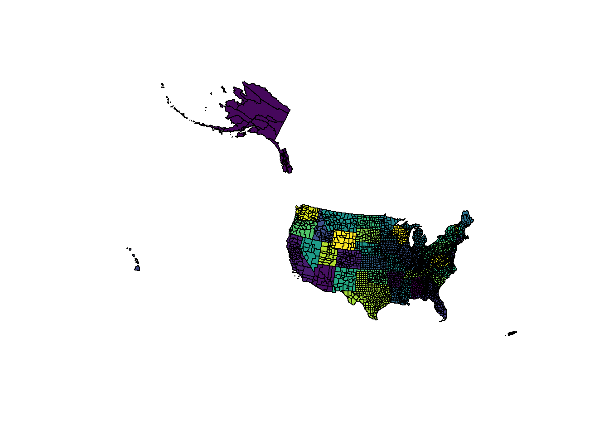

Vector spatial data can be complex, and sometimes convoluted. To introduce some terminology look at this map of USA counties.
library(USAboundaries)
library(viridis)
n_colours <- function(n) viridis(n)
u_colours <- function(x) {f <- factor(x); n_colours(nlevels(f))[f]}
prj <- "+proj=aea +lat_1=29.5 +lat_2=45.5 +lat_0=37.5 +lon_0=-96 +x_0=0 +y_0=0 +ellps=GRS80 +datum=NAD83 +units=m +no_defs"
usc <- spTransform(us_counties(), prj)
set.seed(1)
usc$colour <- sample(viridis(nrow(usc)))
plot(usc, col = usc$colour)Every individually coloured region is an “object”, a.k.a. a “feature”, or a “multipolygon”“, it corresponds to a row in the SpatialDataFrame usc. There are at least two more hierarchical levels in this data set though.
The first, up one level, is the U.S. state, see the larger collections of counties into states, although each county is still demarked by its boundary.
usc$state_colour <- u_colours(usc$state_name)
plot(usc, col = usc$state_colour)
The second level is down to the individual polygon “parts” that we see as “islands” in its general meaning (although they may not actually be islands in the real world).
We cannot get at these lower level entities without decomposing the data set.
print(nrow(usc))## [1] 3220dusc <- disaggregate(usc)
set.seed(1)
dusc$part_colour <- sample(u_colours(seq(nrow(dusc))))
print(nrow(dusc))## [1] 3306plot(dusc, col = dusc$part_colour, border = NA)There aren’t very many counties that were composed of more than one single polygon, and this is mostly about the actual islands making up a single county. It is clear that each individual island along the chain of Alaskan islands is a separate differently-coloured part, although grouped as belonging to a single county - Aleutians West and Aleutians East. This grouping continues up the hierachy to membership within a single state.
How do we get properties of these entities?
coordinates gives a “whole feature” centroid and rgeos::gCentroid gives a “whole of data set” centroid. (Note that these might not be the same kind of centroid, there are at least three kinds and of course the answer also depends on the coordinate system in use. There is a least “box centroid”, “inner centroid” and “weighted centroid” in common use, but there are others.)
dim(coordinates(usc))## [1] 3220 2rgeos::gCentroid(usc)## class : SpatialPoints
## features : 1
## extent : -728246.2, -728246.2, 827947.2, 827947.2 (xmin, xmax, ymin, ymax)
## coord. ref. : +proj=aea +lat_1=29.5 +lat_2=45.5 +lat_0=37.5 +lon_0=-96 +x_0=0 +y_0=0 +ellps=GRS80 +datum=NAD83 +units=m +no_defs +towgs84=0,0,0To get a “whole feature” centroid from rgeos we need the byid argument.
length(rgeos::gCentroid(usc, byid = TRUE))## [1] 3220To get it only per “part” use disaggregate.
length(rgeos::gCentroid(disaggregate(usc), byid = TRUE))## Warning in TopologyFunc(spgeom, id, byid, "rgeos_getcentroid"):
## Polygons object missing comment attribute ignoring hole(s). See function
## createSPComment.
## Warning in TopologyFunc(spgeom, id, byid, "rgeos_getcentroid"):
## Polygons object missing comment attribute ignoring hole(s). See function
## createSPComment.## [1] 3306What about in groups of features? Our states are groups of counties, and interestingly we’d like to store attribute information per county and so why not nominate the objects to be states, and the parts to be counties?
I don’t think we care so much about properties on each part, though it would be nice to be able to tabulate parts per county and their sizes etc. This is not how GIS works so park this thought. (To do this properly we need to decompose these objects into primitives rather than components of simple features. This is partly fleshed out in the rangl package.)
The sp family can be used to get the state-centroid from the component counties. Let’s ignore the now the need to get an “inner centroid”, i.e. one that actually falls inside a polygon part, rather than inside a concavity or hole.
states <- rgeos::gUnionCascaded(usc, usc$state_name)
plot(rgeos::gCentroid(states, byid = TRUE))
plot(states, border = "lightgrey", add = TRUE)## notice how coordinates and gcentroid are slightly different
# points(coordinates(states), pch = "x")To do this though we’ve lost all of the interesting information, like what the state is!
Another way is to split the data set by state attribute and apply a “per data set” centroid calculation, but again it’s a hassle to carry through the state id and recompose everything.
state_centroids_list <- lapply(split(usc, usc$state_name), function(x) coordinates(rgeos::gCentroid(x)))
state_centroids <- do.call(rbind, state_centroids_list)
row.names(state_centroids) <- NULL
state_centroids <- SpatialPointsDataFrame(state_centroids, data.frame(state_name = names(state_centroids_list), stringsAsFactors = FALSE), proj4string = CRS(proj4string(usc)),
match.ID = FALSE)
plot(state_centroids)
text(state_centroids, lab = state_centroids$state_name, cex = 0.7)Another way forward is to decompose to tidy data and do the calculations yourself, this seems ok since centroid is really simple if you only want the “box centroid”.
library(spbabel) ## use sptable (could also use ggplot2::fortify)
library(dplyr)
usc$object_ <- seq(nrow(usc))
state_centroids2 <- sptable(usc) %>% inner_join(as.data.frame(usc[, c("object_", "state_name")])) %>% group_by(state_name) %>% summarize(centroidX = mean(x_), centroidY = mean(y_)) ## Joining, by = "object_"library(ggplot2)
ggplot(state_centroids2) + aes(x = centroidX, y = centroidY, label = state_name) + geom_text()